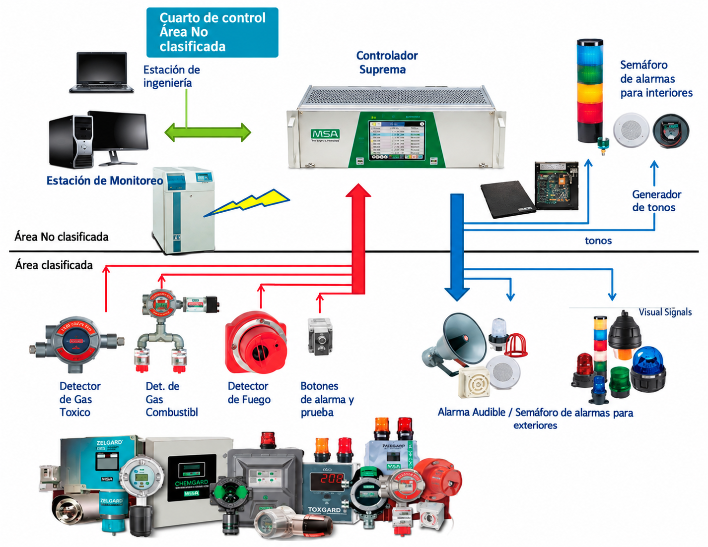
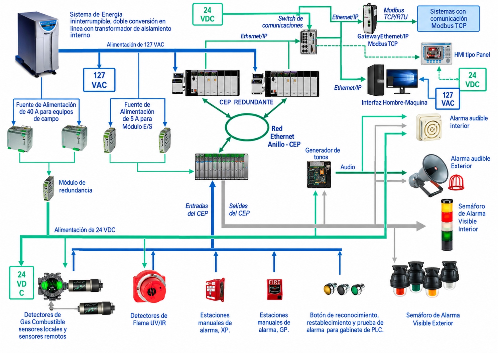
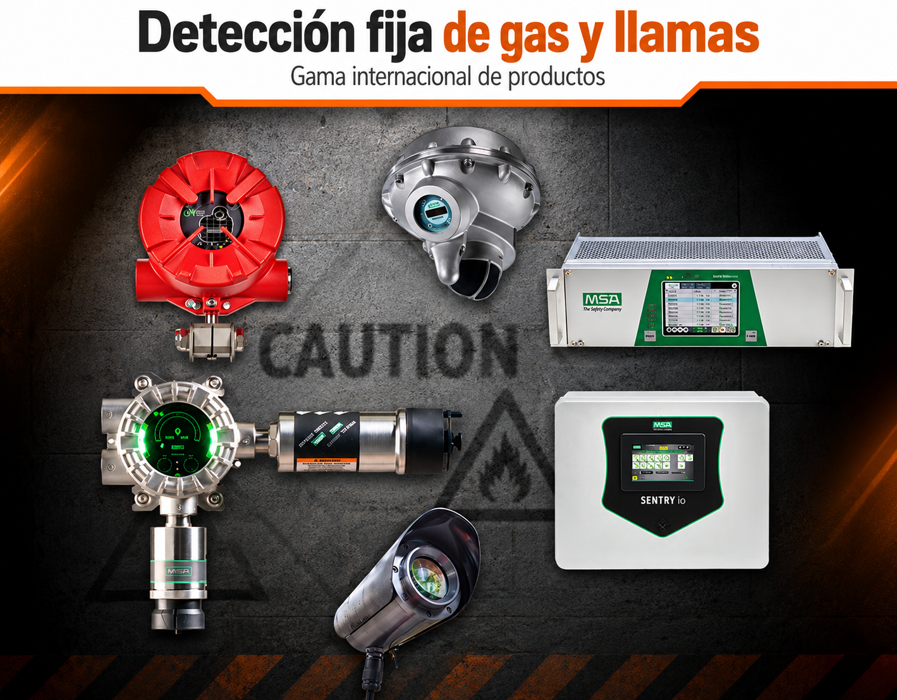

Instalación, supervisión y mantenimiento
SOS4 SERVICES ofrece soluciones especializadas para sistemas fijos de detección de gases en instalaciones industriales.
Nuestros servicios incluyen renta, mantenimiento y calibración de detectores para H₂S y gases combustibles o explosivos.
El objetivo es contribuir a la detección temprana de condiciones peligrosas, fortaleciendo la seguridad y confiabilidad operativa.
Soluciones de detección fija
Equipos destinados al monitoreo continuo de atmósferas industriales donde pueden presentarse gases tóxicos o combustibles.


Detección de gases industriales
Soluciones enfocadas en la identificación temprana de atmósferas potencialmente peligrosas.
Sulfuro de Hidrógeno
Monitoreo fijo para detectar presencia de H₂S en áreas donde pueda existir riesgo de exposición.
Gases Combustibles
Detección de concentraciones de gases o vapores combustibles en atmósferas industriales.
Detección de Fuego
Integración de dispositivos de detección para fortalecer la protección contra incendios.
Detección, alarma y respuesta
Un sistema de gas y fuego puede integrar detectores, señales de alarma, dispositivos visibles y audibles, así como funciones de monitoreo orientadas a una respuesta oportuna ante condiciones de riesgo.
Del diagnóstico a la puesta en servicio
Trabajamos de forma estructurada para mantener los equipos y sistemas en condiciones adecuadas de operación.
Inspección
Revisión de equipos, ubicación, estado general y condiciones de operación.
Mantenimiento
Atención de componentes y elementos del sistema de detección.
Calibración
Verificación y ajuste de los detectores de acuerdo con el servicio requerido.
Supervisión
Seguimiento del funcionamiento y condiciones operativas del sistema.
Protección para diferentes instalaciones
Los sistemas de detección pueden utilizarse en diferentes áreas donde exista riesgo por gases o incendio.
Petróleo y Gas
Monitoreo en instalaciones y áreas operativas del sector.
Plantas de Proceso
Detección en áreas con equipos y procesos industriales.
Instalaciones Marinas
Aplicaciones para ambientes costa afuera y operaciones marinas.
Áreas Industriales
Protección de zonas donde exista riesgo atmosférico o de incendio.
¿Necesitas un sistema de detección fijo?
Consulta opciones de renta, instalación, mantenimiento, calibración y supervisión para tu instalación.